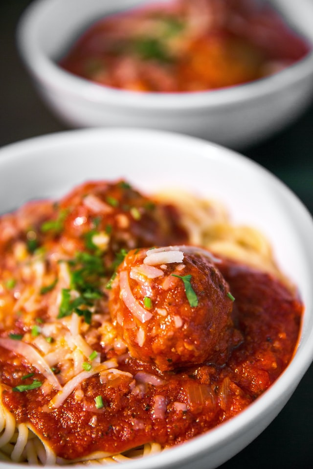

Spaghetti

Description
A delicious homemade spaghetti sauce is what really sets this dish apart!
Ingredients
- 2 (28 ounce) cans whole peeled tomatoes
- 1 large stem of basil
- 1 tablespoons butter
- 4 cloves of garlic
- 1 teaspoon red pepper flakes
- 1 tablespoon oregano
- 1 medium carrot
- 1 onion cut in half
- 1 tablespoon fish sauce
- 1/8 cup of olive oil
Steps
- Preheat the oven to 300 degrees.
- Heat olive oil and butter in oven safe saucepan.
- Add garlic and cook til softened.
- Add red pepper flakes and oregano, stir til fragrant.
- Add tomatoes (leave about a cup leftover to add in at the end) basil, onion, and carrot.
- Put sauce into the oven, cover, but leave a gap for venting, and cook down for 3 to 6 hours.
- When the sauce is ready, remove from oven and remove any large chunks from onion and carrot.
- Stir in 1 cup leftover tomato sauce
- Stir in a cold pat of butter for extra richness (optional).
- Boil your choice of favorite noodles and then top with sauce and serve.